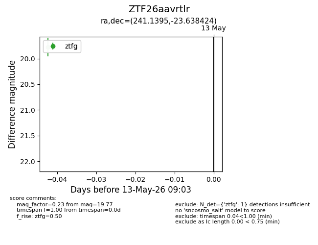
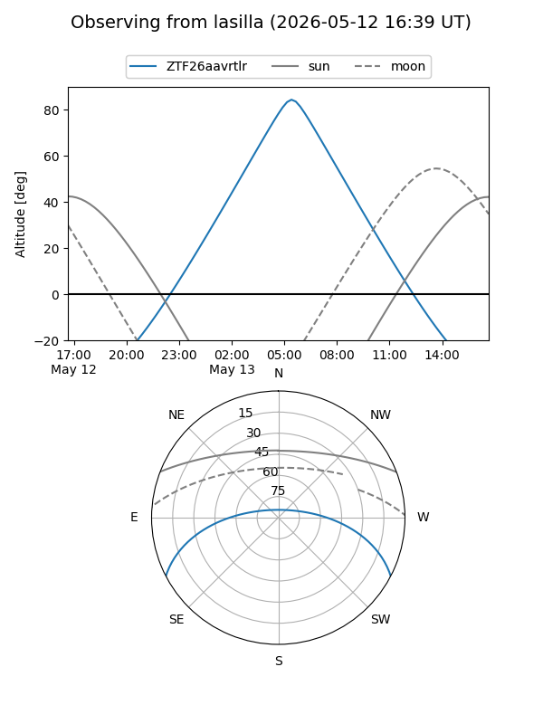
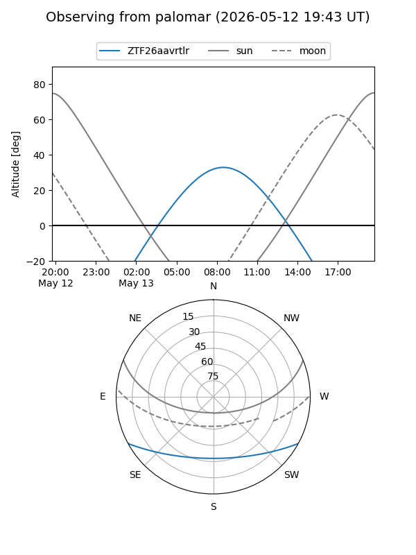

ZTF26aavrtlr
Target ZTF26aavrtlr at 2026-05-13 09:05
Aliases and brokers:
FINK: link
Lasair: link
ALeRCE: link
alt names
ZTF26aavrtlr (ztf,fink_ztf)
Coordinates:
equatorial (ra, dec) = 241.1395,-23.63842
equatorial (HMS+DMS) = 16:04:33.48,-23:38:18.33
galactic (l, b) = (350.0572,+21.08486)
Flags:
Photometry:
last ztfg=19.77
1 ztfg detections
Lightcurve

Visibility


Additional plots